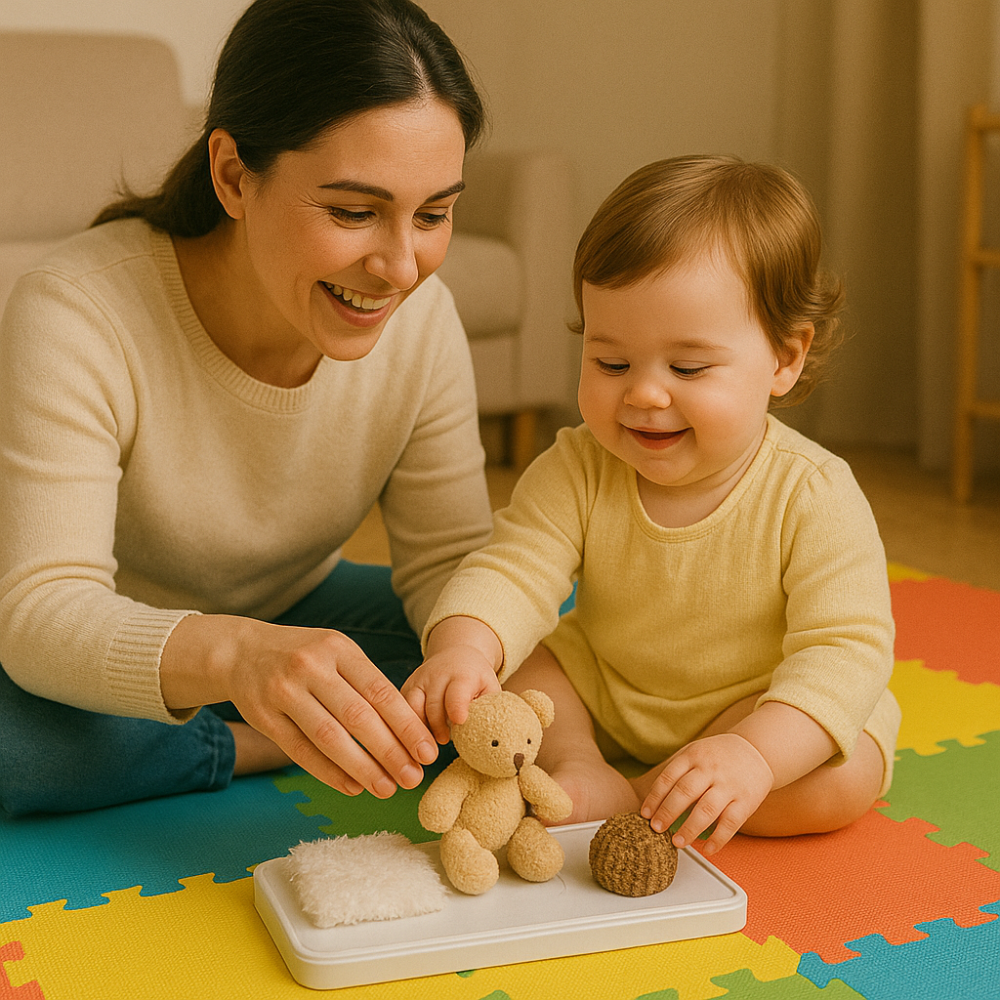
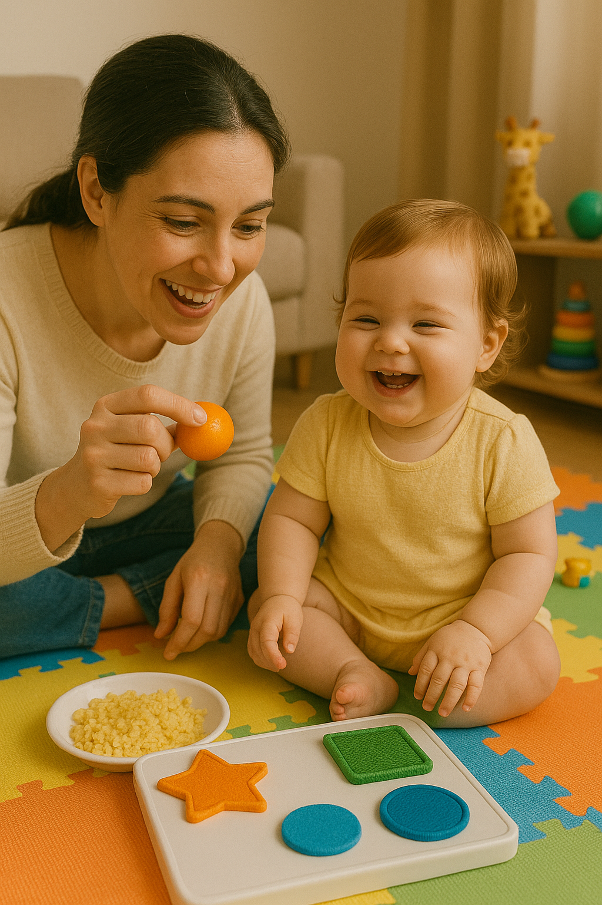
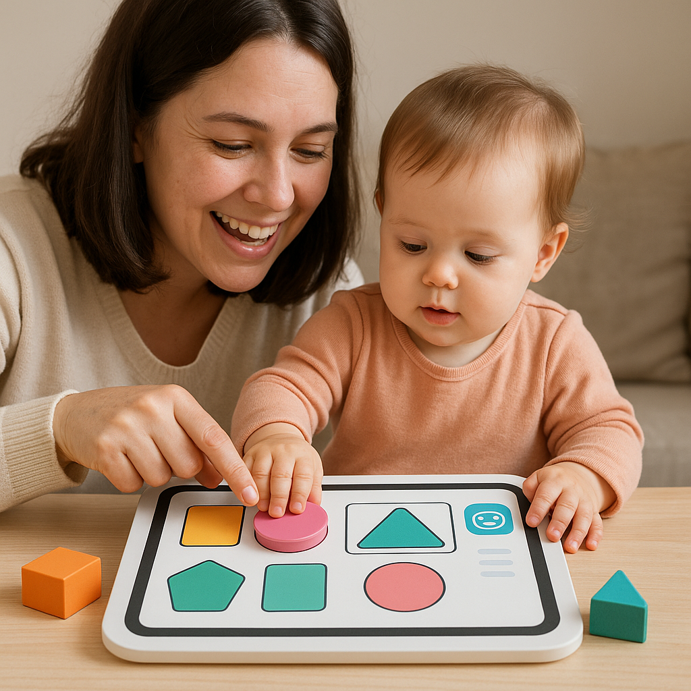
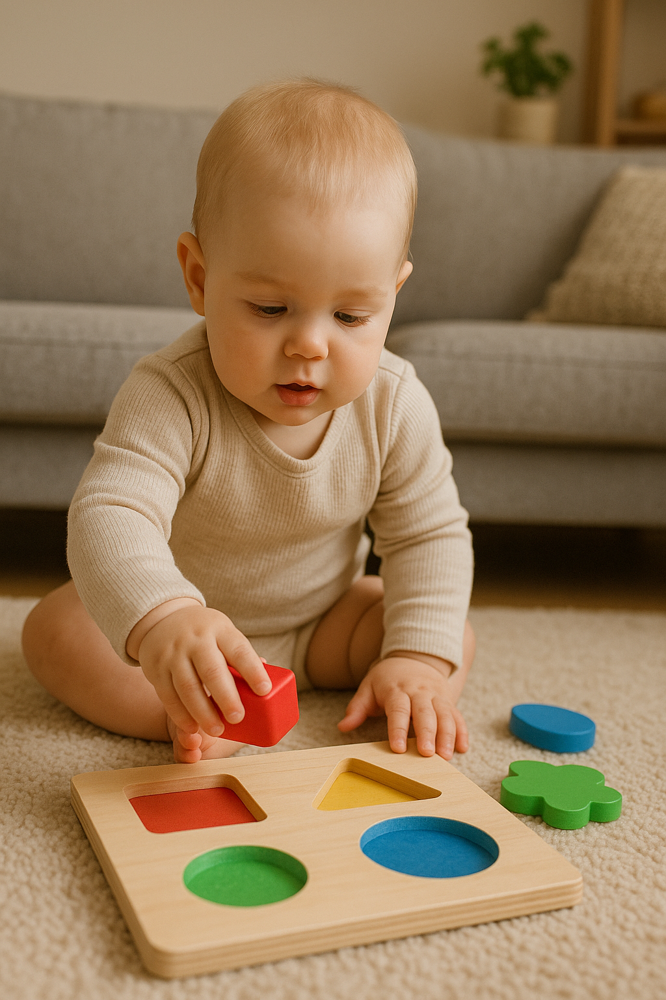
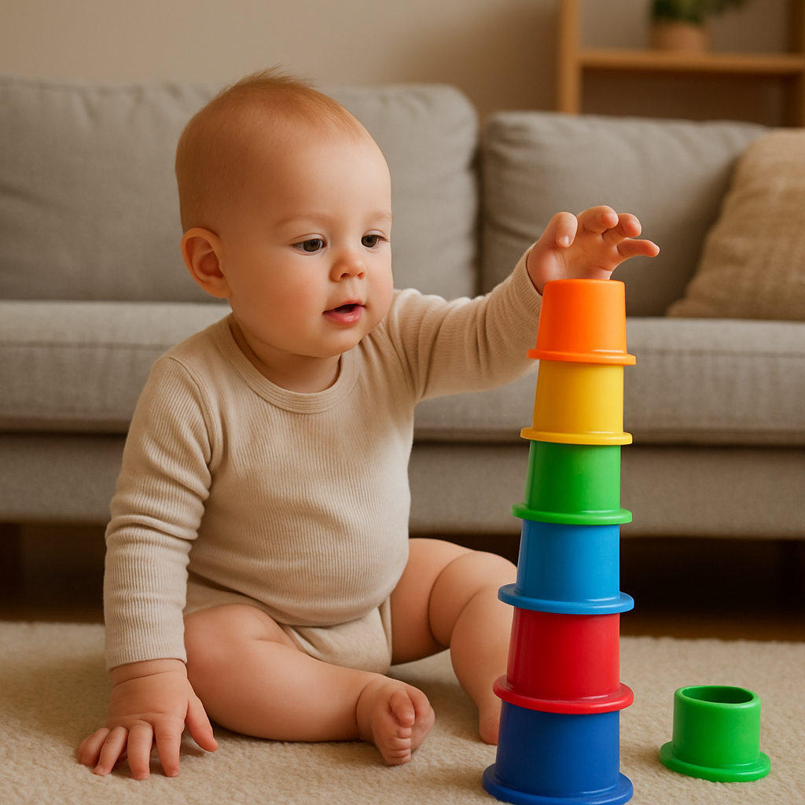

बच्चों के लिए शैक्षिक खेल (8 महीने से 2 साल)
संज्ञानात्मक, शारीरिक और भाषा विकास को बढ़ावा देने वाले मजेदार खेल
8 महीने से 2 साल की उम्र बच्चों के तेजी से विकास का समय होता है। यहाँ उम्र के अनुसार शैक्षिक खेल दिए गए हैं जो आपके बच्चे के विकास में मदद करेंगे।
8-12 महीने
1-1.5 साल
1.5-2 साल
1. पीकाबू (लुका-छिपी)
कैसे खेलें
- अपने चेहरे को हाथों से ढककर "लुका-छिपी" खेलें
- हाथ हटाकर "पीकाबू!" कहें और मुस्कुराएँ
- बच्चे के चेहरे पर कपड़ा डालकर भी खेल सकते हैं
- बच्चे को भी अपना चेहरा ढकने के लिए प्रोत्साहित करें
विकासात्मक लाभ
- वस्तु स्थायित्व की समझ विकसित करता है
- सामाजिक संपर्क और आँख से संपर्क को बढ़ावा देता है
- भावनात्मक विकास में सहायक
2. बनावट अन्वेषण
सामग्री
- विभिन्न बनावट वाली वस्तुएँ (मखमल, फोम, रबर, लकड़ी)
- रुई, स्पंज, अलमारी की चिपकने वाली पट्टी
कैसे खेलें
- विभिन्न बनावट वाली वस्तुएँ बच्चे के सामने रखें
- प्रत्येक वस्तु को छूकर दिखाएँ और बनावट बताएँ ("यह नरम है")
- बच्चे को वस्तुओं को छूने और महसूस करने दें
- बच्चे की प्रतिक्रिया देखें और प्रोत्साहित करें
विकासात्मक लाभ
- संवेदी जागरूकता बढ़ाता है
- स्पर्श संवेदनशीलता विकसित करता है
- वर्णनात्मक भाषा कौशल को बढ़ावा देता है
3. आकार पहचान खेल
सामग्री
- शेप सॉर्टर खिलौना या घर पर बना सॉर्टर
- विभिन्न आकार के ब्लॉक (गोल, चौकोर, त्रिकोण)
कैसे खेलें
- एक समय में एक आकार पेश करें (पहले गोल, फिर चौकोर)
- बच्चे को दिखाएँ कि ब्लॉक को सही छेद में कैसे डालना है
- बच्चे को स्वयं प्रयास करने दें
- आकारों के नाम दोहराएँ ("यह गोल है", "यह चौकोर है")
विकासात्मक लाभ
- आकार पहचान कौशल विकसित करता है
- समस्या समाधान क्षमता को बढ़ाता है
- हाथ की पकड़ और निपुणता में सुधार करता है
4. रंग मिलान खेल
सामग्री
- रंगीन कप (लाल, नीला, पीला, हरा)
- उन्हीं रंगों की छोटी वस्तुएँ (पोम्पोम, ब्लॉक)
कैसे खेलें
- रंगीन कपों को टेबल पर रखें
- एक रंग की वस्तु उठाकर उसी रंग के कप में डालकर दिखाएँ
- बच्चे को भी वस्तु उठाकर सही कप में डालने दें
- रंगों के नाम बताते रहें ("यह लाल है")
विकासात्मक लाभ
- रंग पहचान कौशल विकसित करता है
- वर्गीकरण क्षमता को बढ़ावा देता है
- हाथ-आँख समन्वय में सुधार करता है
5. पहेली समय (सरल पजल)
सामग्री
- 2-3 टुकड़ों वाले सरल पजल (जानवर, फल)
- घर पर बने कार्डबोर्ड पजल (छवि को 2-3 टुकड़ों में काटें)
कैसे खेलें
- पहले पूरा पजल बच्चे को दिखाएँ
- पजल के टुकड़े अलग करें और एक टुकड़ा सही जगह लगाकर दिखाएँ
- बच्चे को दूसरा टुकड़ा लगाने के लिए प्रोत्साहित करें
- पजल में दिख रही वस्तु के बारे में बात करें ("यह सेब है")
विकासात्मक लाभ
- समस्या समाधान कौशल विकसित करता है
- स्थानिक जागरूकता को बढ़ावा देता है
- धैर्य और एकाग्रता बढ़ाता है
6. ब्लॉक बनाना (टावर बनाएँ)
सामग्री
- बड़े नरम ब्लॉक या लकड़ी के ब्लॉक
- रंगीन कप या डिब्बे (वैकल्पिक)
कैसे खेलें
- बच्चे के सामने 2-3 ब्लॉक रखकर एक छोटा टावर बनाएँ
- बच्चे को टावर गिराने दें और फिर से बनाने के लिए प्रोत्साहित करें
- धीरे-धीरे टावर की ऊँचाई बढ़ाएँ
- ब्लॉकों को रंग के अनुसार छाँटने का खेल भी खेलें
विकासात्मक लाभ
- हाथ-आँख समन्वय को बेहतर बनाता है
- रचनात्मक सोच को प्रोत्साहित करता है
- स्थानिक समझ विकसित करता है
बेबी एक्टिविटी प्लानर टूल आज़माएं
अपने बच्चे की उम्र और विकास के हिसाब से पर्सनलाइज्ड प्ले एक्टिविटी प्लान जनरेट करें!